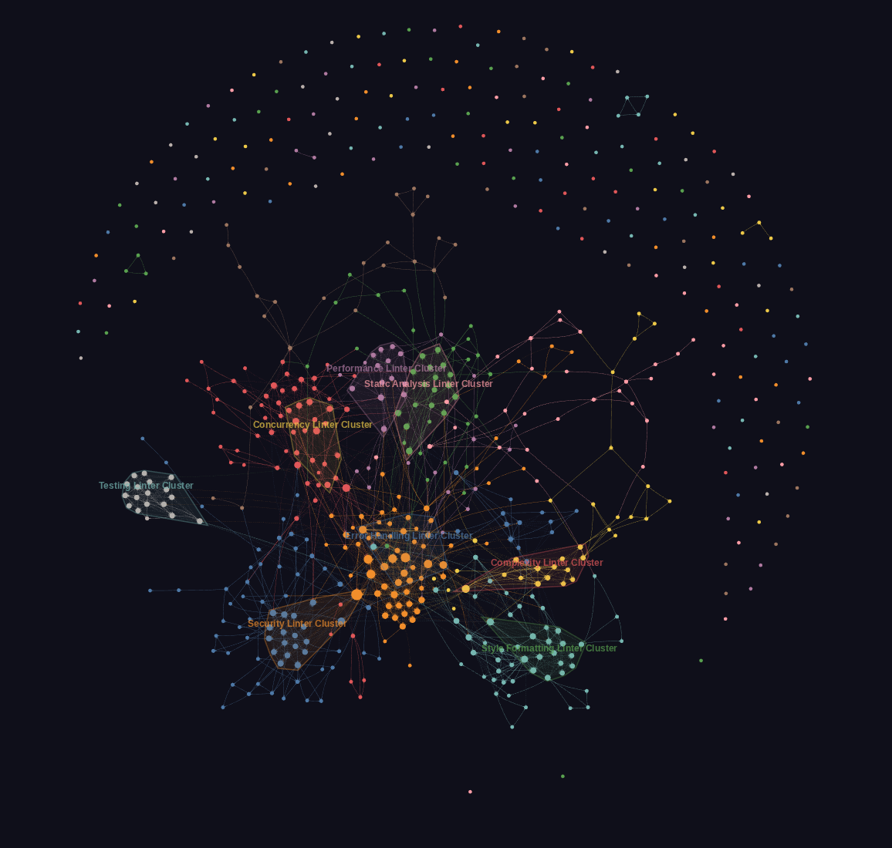

When an agent encounters a golangci-lint diagnostic, it calls a single tool and immediately understands what the issue means and how to fix it.
Primary entry point. Runs golangci-lint, parses results, and returns fix guidance with package breakdown and strategy recommendation.
Parse existing golangci-lint JSON output. Returns fix guidance for all unique (linter, rule) pairs with Related Context.
Per-diagnostic lookup by linter name and optional rule ID. Returns XML-tagged guidance with instructions, examples, patterns, and related sections.
Discover all supported linters with compound/simple classification and rule counts.
Strategy summary of raw JSON: unique issue count, package breakdown, and recommended approach.
All 629 guides embedded via go:embed. No external files, no database, no network calls.
Built with mcp-go, stdio transport. Five tools exposed for lint diagnosis and fix guidance.
Plugin hooks, platform rules, and skill files for opencode, Claude Code, and Cursor.

Linter relationship graph: 629 nodes, 2,232 edges, 10 communities. Explore the interactive graph →
Install the MCP server binary:
Install the OpenCode skill:
Configure in opencode.json: